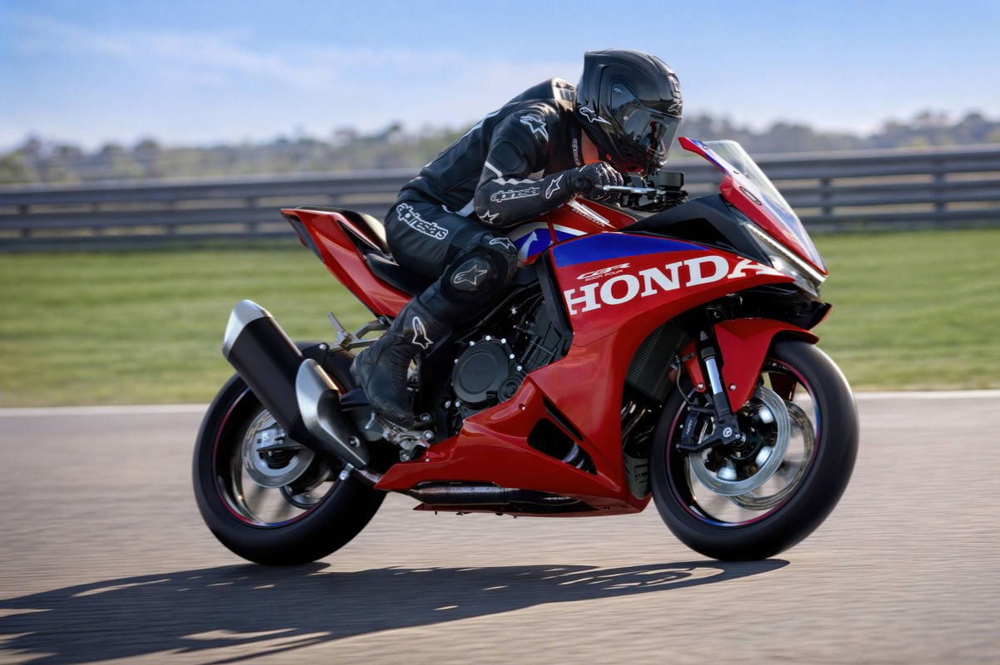

Novedades › Honda CBR500R Four
Novedades · Super sport tetracilíndrica A2
Honda CBR500R Four: vuelven los 4 cilindros para plantar cara a las chinas
Honda recupera el tetracilíndrico en el segmento de 500 con una deportiva de 502 cc, DOHC, E-Clutch de serie y 189 kg. En España llegará a un precio "extraordinariamente atractivo": la duda es si podrá competir con las ZXMOTO 500RR y KOVE 450RR, que rondan los 6.300-6.600 €.

La respuesta rápida
La Honda CBR500R Four 2027 es la versión deportiva de la familia de 500 tetracilíndricas que Honda presentó en China (Chongqing) en septiembre de 2025 junto a la naked CB500 Super Four. Monta un 4 cilindros en línea de 502 cc, DOHC y refrigeración líquida con 16 válvulas, derivado de la experiencia con la CB400 Super Four japonesa. Declara 51,8 kW (70 CV) a 11.000 rpm y 46,3 Nm a 10.500 rpm, con E-Clutch de serie, embrague antirrebote, acelerador electrónico, tres modos de conducción + dos de usuario, control de tracción HSTC y 189 kg. Se ofrece también una versión de 35 kW para el carnet A2.
El gran argumento comercial es el precio: Honda España todavía no ha publicado cifra, pero habla de un importe "extraordinariamente atractivo". En Reino Unido la Four sale a 6.999 libras (≈ 8.320 €), y la prensa española estima que en nuestro mercado podría rondar los 7.800 €. El problema es que enfrente tiene deportivas chinas por bastante menos: la ZXMOTO 500RR cuesta 6.592 € y la KOVE 450RR, 6.297 €.
Motor
| Cilindrada | 502 cc, 4 cilindros en línea, 16 válvulas |
| Distribución | DOHC, refrigeración líquida |
| Diámetro × carrera | 60 × 44,4 mm |
| Compresión | 12,3:1 |
| Potencia | 51,8 kW (70 CV) a 11.000 rpm |
| Par | 46,3 Nm a 10.500 rpm |
| Velocidad máxima | 210 km/h |
| Cambio | 6 velocidades, cadena |
| Embrague | Multidisco en baño de aceite, antirrebote asistido, Honda E-Clutch |
| Alimentación | Inyección programada PGM-FI, admisión descendente con conductos Ram-Air |
| Carnet | A2 (versión limitada a 35 kW) |
Ojo con las cifras: la ficha oficial de Honda España publica 51,8 kW (70 CV) @ 11.000 rpm y 46,3 Nm @ 10.500 rpm, mientras que gran parte de la prensa (Todocircuito, Moto1Pro, Motociclismo) cita 72 CV a 11.000 rpm, 47,4-47,5 Nm a 9.750 rpm y corte a 12.500 rpm. La diferencia está en cómo se redondea la homologación europea; no hay un motor distinto. El régimen máximo declarado por la prensa es de 12.500 rpm.
El regreso de los cuatro cilindros
Honda lleva años sin un tetracilíndrico de acceso en Europa: la CBR650R / CB650R son las naked/semi de 650 y hace mucho que el segmento de 500 quedó huérfano de cuatro cilindros. Con la familia FOUR la marca recupera esa receta: un 4 en línea compacto, con recubrimiento de los cilindros en níquel-carburo de silicio (elimina las camisas y ahorra peso), taqués con tratamiento DLC, mayor relación de compresión y escape 4-2-1 cuyo silencioso lateral recuerda deliberadamente a la CB400 Four de 1975.
Ese posicionamiento también tiene lectura de mercado: en un segmento dominado por bicilíndricas y por la oferta china, Honda apuesta por el carácter del cuatro — estirado, con pulso mecánico y sonido propio — como diferenciador frente a una KOVE o una ZXMOTO de prestaciones parecidas sobre el papel.
E-Clutch, ciclística y equipamiento
- E-Clutch de serie: misma filosofía que en la CB650R — se suben las marchas con el pedal de siempre, sin necesidad de tirar de la maneta; la maneta se mantiene y permite control manual en cualquier momento.
- Tres niveles de tacto del cambio (Soft, Medium, Hard) configurables por separado en subidas y bajadas, con golpe de gas en reducciones y control de rebote de la rueda trasera.
- Acelerador electrónico (TBW), 3 modos de conducción (Standard, Sport, Urban) + 2 modos User; potencia, freno motor y control de tracción HSTC ajustables, con control de caballito (wheelie control).
- Chasis tubular de acero tipo diamante usando el motor como elemento portante, basculante de aluminio fundido.
- Suspensión: horquilla invertida KYB de 41 mm y monoamortiguador Pro-Link con precarga regulable en 5 posiciones.
- Frenos: doble disco delantero de 296 mm con pinzas radiales Nissin, disco trasero de 240 mm, ABS de doble canal.
- Neumáticos Pirelli Diablo Rosso IV en 120/70-ZR17 y 160/60-ZR17.
- Pantalla TFT de 5" con conectividad Honda RoadSync, toma USB-C, iluminación Full LED y asiento a 780 mm.
- Depósito de 14 litros; consumo declarado 4,5 l/100 km y 105 g/km de CO2.
- Colores: Rojo Ignition y Negro Ballistic Mate Metalizado.
Precio: el gran argumento (y la gran pregunta)
Honda España ha confirmado la llegada pero no ha publicado precio, calificándolo de "extraordinariamente atractivo". Las pistas disponibles:
| Reino Unido (tarifa publicada) | 6.999 £ (≈ 8.320 €) |
| Japón (CBR400R Four) | ≈ 1.000.000 ¥ (≈ 6.700-6.800 €) |
| España: CBR500R bicilíndrica con E-Clutch | desde 7.250 € |
| España: estimación prensa para la Four | ≈ 7.800 € |
La lectura de la prensa es clara: el paso del bicilíndrico al tetracilíndrico no debería suponer un sobrecoste grande, a la vista de la tarifa británica (donde la CBR500R de dos cilindros tiene un precio muy cercano) y de la japonesa (unos 600 € por encima de la CBR400R bicilíndrica). De confirmarse una cifra cercana a los 7.800 €, la Four se quedaría muy por debajo de la Kawasaki Ninja ZX-4R (≈ 9.500 €), la otra tetracilíndrica del segmento.
La competencia china, el rival incómodo
| Honda CBR500R Four 2027 | ≈ 7.800 € (est.) · 70-72 CV · 189 kg |
| ZXMOTO 500RR | 6.592 € · 4 cilindros · 65 CV |
| KOVE 450RR | 6.297 € · 2 cilindros · 49 CV |
| Kawasaki Ninja ZX-4R | ≈ 9.500 € · 4 cilindros |
Precios de referencia en España (promos perecederas excluidas donde se conoce). La Four aún no tiene tarifa oficial; la estimación de 7.800 € es de la prensa y no es vinculante. Verifica con el concesionario.
Aquí está la tensión real del modelo: Honda dice "planta cara a las chinas" y la prensa lo enmarca directamente como su apuesta frente a ZXMOTO, que con su 500RR ofrece 4 cilindros por 6.592 € y es la referencia china del segmento. La 500RR es algo menos potente sobre el papel, pero cuesta entre 1.200 y 1.300 € menos. La KOVE 450RR, con otro concepto (bicilíndrica de 49 CV y cara de RC16), se vende por 6.297 € y pesa unos 20 kg menos.
La partida se juega en el diferencial de precio: si la Four aterriza en 7.500-8.000 € tendrá que convencer con fibra Honda, tetracilíndrico de 12.500 rpm, E-Clutch y red de concesionarios. Si cede a la presión china y se acerca a los 7.000 €, entonces el argumento es casi incontestable: cuatro cilindros japoneses por el precio de una china.
Conclusión
La Honda CBR500R Four es la noticia del regreso de los cuatro cilindros al segmento de acceso: 502 cc, DOHC, 7.000 a 12.500 rpm de carácter, E-Clutch de serie y 189 kg en un chasis deportivo con KYB, frenos radiales Nissin y TFT de 5". En el papel, es la deportiva japonesa con más carácter del carnet A2/medio en años. Su éxito dependerá casi exclusivamente de una variable: el precio. A ≈ 7.800 € compite de tú a tú con la Kawasaki ZX-4R, pero queda 1.200-1.500 € por encima de las ZXMOTO 500RR y KOVE 450RR. Honda la vende como asequible y "con más cilindros que tu coche"; habrá que ver si la tarifa española convierte ese eslogan en realidad.
Fuentes
- Honda España — CBR500R FOUR, vista general y especificaciones oficiales
- Todocircuito — Honda España anuncia la CBR500R Four a un precio "extraordinariamente atractivo"
- Moto1Pro — Nueva Honda CBR500R Four: llega la deportiva asequible de 4 cilindros
- Moto1Pro — CBR400R/CBR500R Four: las 4 cilindros A2 disponibles antes del verano
- Motociclismo.es — cifras de homologación (72 CV y versión A2) · Diciembre 2025